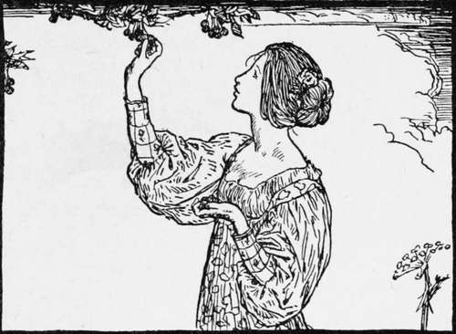
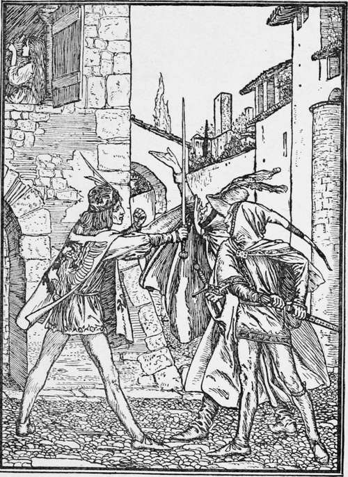

Cherry The Frog-Bride
Description
This section is from the book "Household Tales by Brothers Grimm", by Brothers Grimm. Also available from Amazon: Household Tales by Brothers Grimm.
Cherry The Frog-Bride
There was once a king who had three sons. Not far from his kingdom lived an old woman, who had an only-daughter called Cherry. The king sent his sons out to see the world, that they might learn the ways of other lands, and get wisdom and skill in ruling the kingdom, which they were one day to have for their own. But the old woman lived at peace at home with her daughter, who was called Cherry, because she liked cherries better than any other kind of food, and would eat scarcely anything else.
Now her poor old mother had no garden, and no money to buy cherries every day for her daughter. And at last she was tempted by the sight of some in a neighbouring garden to go in and beg a few of the gardener. But, as ill-luck would have it, the mistress of the garden was as fond of the fruit as Cherry was, and she soon found out that all the best were gone, and was not a little angry at their loss. Now she was a fairy too, though Cherry's mother did not know it, and could tell in a moment who she had to thank for the loss of her dessert. So she vowed to be even with Cherry one of these days.
The princes, while wandering on, came one day to the town where Cherry and her mother lived; and as they passed along the street, saw the fair maiden standing at the window, combing her long and beautiful locks of hair.
Then each of the three fell deeply in love with her, and began to say how much he longed to have her for his wife ! Scarcely had the wish been spoken, than each broke out into a great rage with the others, for wanting to have poor Cherry, who could only be wife to one of them. At last all drew their swords, and a dreadful battle began. The fight lasted long, and their rage grew hotter and hotter, when at length the old fairy, to whom the garden belonged, hearing the uproar, came to her gate to know what was the matter. Finding that it was all about her fair neighbour, her old spite for the loss of the cherries broke forth at once, worse than ever. " Now then," said she, "I will have my revenge"; and in her rage she wished Cherry turned into an ugly frog, and sitting in the water, under the bridge at the world's end. No sooner said than done; and poor Cherry became a frog, and vanished out of their sight. The princes now had nothing to fight for ; so, sheathing their swords again, they shook hands as brothers, and went on towards their father's home.
The old king meanwhile found that he grew weak, and ill-fitted for the business of reigning; so he thought of giving up his kingdom: but to whom should it be? This was a point that his fatherly heart could not settle; for he loved all his sons alike. "My dear children," said he, " I grow old and weak, and should like to give up my kingdom; but I cannot make up my mind which of you to choose for my heir, for I love you all three; and besides, I should wish to give my people the cleverest and best of you for their king. However, I will give you three trials, and the one who wins the prize shall have the kingdom. The first is to seek me out one hundred ells of cloth, so fine that I can draw it through my golden ring." The sons said they would do their best, and set out on the search.
The Princes fighting for Cherry.
The two elder brothers took with them many followers, and coaches and horses of all sorts, to bring home all the beautiful cloths which they should find ; but the youngest went alone by himself. They soon came to where the roads branched off into several ways: two ran through smiling meadows, with smooth paths and shady groves, but the third looked dreary and dirty, and went over barren wastes. The two eldest chose the pleasant ways; but the youngest took his leave, and whistled along over the dreary road. Whenever fine linen was to be seen, the two elder brothers bought it, and bought so much that their coaches and horses bent under their burthen.
The youngest, on the other hand, journeyed on many a weary day, and could find no place where he could buy even one piece of cloth, that was at all fine and good. His heart sank beneath him, and every mile he grew more and more heavy and sorrowful.
At last he came to the bridge at the world's end; and there he sat himself down to rest and sigh over his bad luck, when an ugly-looking frog popped its head out of the water, and asked, with a voice that had not at all a harsh sound to his ears, what was the matter. The prince said in a pet, "Silly frog ! thou canst not help me." "Who told you so?" said the frog; "tell me what ails you." The prince still sat down moping and sighing, but after a while he began to tell the whole story, and why his father had sent him out. " I will help you," said the frog; so it jumped into the stream again, and soon came back, dragging a small piece of linen not bigger than one's hand, and by no means the cleanest in the world in its look. However, there it was, and the frog told the prince to take it away with him. He had no great liking for such a dirty rag; but still there was something in the frog's speech that pleased him much, and he thought to himself, " It can do no harm, it is better than nothing ; " so he picked it up, put it in his pocket, and thanked the frog, who dived down again, panting and quite tired, as it seemed, with its work. The further he went the heavier he found the pocket grow, and so he turned himself homewards, trusting greatly in his good luck.
He reached home nearly about the same time that his brothers came up, with their horses and coaches all heavily laden. Then the old king was very glad to see his children again, and pulled the ring off his finger to try who had done the best; but in all the stock that the two eldest had brought there was not one piece, a tenth part of which would go through the ring. At this they were greatly abashed; for they had made a laughingstock of their brother, who came home, as they thought, empty-handed. But how great was their anger when they saw him pull from his pocket a piece, that for softness, beauty, and whiteness, was a thousand times better than anything that was ever before seen! It was so fine that it passed with ease through the ring; indeed, two such pieces would readily have gone in together. The father embraced the lucky youth, told his servants to throw the coarse linen into the sea, and said to his children, "Now you must set about the second task which I am to set you;—bring me home a little dog so small that it will lie in a nut-shell."
Continue to:
Tags
fairy tales, children's stories, brothers grimm, household tales